생물분류기사(식물) (2013-06-02 기출문제)
1과목: 계통분류학
1. 총포가 있는 두상화서를 가지며 5수성 합판화관과 취약웅예로 특징 지을 수 있는 분류군으로 가장 적합한 것은?
- 콩과
- 인동과
- 용담과
- 국화과
(정답률: 80%)

2. 해부학적 형질이 분류 목적에 적용되는 동안에 밝혀진 일반적인 원리로 가장 거리가 먼 것은?
- 해부학적 자료는 속(屬)이나 그 이상의 분류 계급에서 가장 유용하게 쓰인다.
- 구조적 특수화에서 초래되는 유사점은 평행진화 또는 수렴진화에 의한 것이라기 보다는 가까운 유연관계를 의미하는 것이다.
- 해부학적 자료는 유연관계가 있는 것을 보여주기 보다는 가까운 유연관계가 아님을 보여주는 경우에 더 신빙성이 있다.
- 기관이나 조직의 한 가지 해부학적 특징이 종(種) 또는 속(屬)을 대표하는 것이 아닌 경우도 많다.
(정답률: 81%)
3. 1개 또는 2개의 염색체가 소실 또는 추가되는 현상을 무엇이라 하는가?
- 이수체현상(aneuploidy)
- 타가배수체현상(allopolyploidy)
- 자가배수체현상(autopolyploidy)
- 배수체현상(polyploidy)
(정답률: 89%)
4. 윤형동물(Rotifera)의 특징으로 옳지 않은 것은?
- 의체강동물이다.
- 이배엽성이며, 몸의 앞쪽에는 발달된 촉수가 있다.
- 인두에 저작기가 있다.
- 배설계는 원신관이다.
(정답률: 74%)
5. 분자데이터를 이용하여 계통수를 작성할 때 염기서열 중 정보제공 위치(informative sites)만을 이용하는 방법은?
- 비가중평균결합법(UPGMA)
- 이웃연결방법(neighbor-joining method)
- 최대가능성방법(maximum likelihood method)
- 최대단순방법(maximum parsimony method)
(정답률: 66%)
6. 다음 중 관속식물이 아닌 것은?
- 선태식물
- 속새식물
- 석송식물
- 송엽란식물
(정답률: 86%)
7. 바위손에 관한 설명으로 옳지 않은 것은?
- 소엽을 갖고 있다.
- 설엽을 갖고 있다.
- 이형포자형이다.
- 포자의 발아구는 단지형이며, 배우자체는 외포자형이다.
(정답률: 67%)
8. 다음 중 박벽포자낭을 갖는 양치식물은?
- 물부추
- 속새
- 고사리삼
- 네가래
(정답률: 82%)
9. 몸의 한 부분에는 수컷의 특징을 갖고 다른 부분은 암컷의 특징을 나타내는 개체를 일컫는 것으로서, 몸의 좌측과 우측이 다른 성의 특징을 나타내는 경우가 뚜렷한 예인 것은?
- 간성(intersex)
- 이차성징(secondary sex difference)
- 암수모자이크(gynandromorphs)
- 연속변이(continuous variation)
(정답률: 73%)
10. 다음 곤충의 분류 중 내시류에 해당하는 것은?
- 흰개미목
- 강도래목
- 벼룩목
- 총채벌레목
(정답률: 61%)
11. 식물의 학명표기에서 목(order)에 해당하는 학명은?
- Embryophyta
- Magnoliopsida
- Sapindales
- Sapindaceae
(정답률: 78%)
12. 동물은 두화(cephalization)를 통해 머리 쪽에 신경계와 감각기들이 집중하게 되면서 주변 환경에 능동적으로 반응할 수 있게 되었다. 다음 특징 중 두화와 직접적으로 관련이 있는 것은?
- 체강 구조
- 체절 형성
- 내골격 형성
- 좌우대칭 구조
(정답률: 76%)
13. 연체동물의 강 명칭과 그 강에 해당되는 종류의 연결로 옳은 것은?
- 다판강 – 백합
- 복족강 – 군소
- 부족강 – 모뿔조개
- 두족강 – 대칭이
(정답률: 82%)
14. 국화아강에 속하는 식물 중 자방상위이며, 잎은 대생 또는 윤생, 내사부가 있으며, 꽃은 방사상칭, 수술수는 꽃잎수와 동일한 특징을 보이는 목은?
- 용담목
- 칼리세라목
- 초롱꽃목
- 국화목
(정답률: 84%)
15. 편형동물의 특징으로 가장 거리가 먼 것은?
- 내보 혹은 외부 기생성 이거나 대개 자유생활을 한다.
- 생식계는 복잡하고, 대부분 암수한몸이다.
- 촌충류는 표피가 섬모로 덮여 있으나, 와충류는 표피가 없다.
- 삼배엽성 동물이다.
(정답률: 50%)
16. 다음 피자식물 아강 중 만생배주나 급만생배주가 아주 흔하고, betalain을 갖고 있으며, 독립중앙태좌 또는 기저태좌를 갖거나 이상 두 가지를 모두 가지는 것은?
- 조록나무아강
- 석죽아강
- 국화아강
- 생강아강
(정답률: 70%)
17. 다음은 PCR(polymerase chain reaction)에 의한 염기서열 분석에 관한 설명이다. 이 3단계를 계속해서 반복하면 DNA 가닥들이 기하급수적으로 증폭된다. 이 때 DNA 증식을 위해 필요한 효소는 다른 중합효소와는 달리 온천수에서 서식하는 미생물에서 추출한 효소를 사용하는데, 이 때 사용하는 중합효소는?
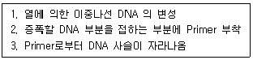
- RNA polymerase
- Helicase
- Taq polymerase
- Restriction enzyme
(정답률: 85%)
18. 빈모강에 관한 설명으로 옳지 않은 것은?
- 전구엽에 촉수와 안점이 있고, 각 체절에 강모 및 측각이 있으며, 부속지는 없다.
- 암수한몸이고, 생식선은 몸의 앞부분 환대가 있는 곳에 있다.
- 장에는 맹관이 발달해 있다.
- 배복혈관이 있고, 배혈관의 일부가 심장이 된다.
(정답률: 52%)
19. 호모플라시(Homoplasy)에 관한 설명으로 가장 적합한 것은?
- 공동조상에서 갈라진 후손들로 구성되나, 몇몇 후손들이 제외된 경우
- 둘 이상의 분류군이 공유하는 형질상태가 상동인 파생형질 상태가 아닌 경우
- 조상종과 그로부터 파생된 모든 종을 포함하는 경우
- 이분지형 분기도에서 그들의 조상으로부터 유래된 것을 의미하는 경우
(정답률: 63%)
20. 다음 중 백합강(Liliopsida)에 속하는 아강은?
- 조록나무아강
- 오아과아강
- 생강아강
- 석죽아강
(정답률: 82%)
2과목: 환경생태학
21. 문화적 부영영화(cultural eutrophication)가 의미하는 것으로 옳은 것은?
- 박테리아에 의한 질소의 감소
- 산소가 없는 상태에서의 물질대사
- 산소가 존재하는 상태에서의 물질대사
- 인간에 의하여 생기는 무기염 유출 증가 형태
(정답률: 89%)
22. 개채군의 변화에 관한 다음 설명 중 가장 거리가 먼 것은?
- 개체군 밀도는 특정 시각에 존재하는 단위 면적당 개체수를 말한다.
- 절대 또는 최대출생률은 이상적 조건하에서 최대수의 개체를 낳는 능력으로 각 개체군에서 일정하지 않다.
- 개체군 밀도는 개체들의 출생, 사망과 이동에 의해 시간에 따라 변화한다.
- 개체군은 밀도, 분포, 출생률, 사망률, 연령구조 등 다양한 속성을 가진다.
(정답률: 76%)
23. 대부분의 무기양분을 식물체가 보유하고 있으며, 특히 뿌리가 얕은 지표에 집중적으로 매트처럼 분포하는 지역은?
- 열대우림
- 사막
- 초원
- 툰드라
(정답률: 71%)
24. 슬러지와 하상 퇴적물 속의 유기물질이 혐기성 상태에서 분해될 경우 관여할 수 있는 미생물은?
- Azotobacter
- Nitrobacter
- Methanobacterium
- Rhizobium
(정답률: 72%)
25. 개체군의 밀도조사방법에 관한 설명으로 가장 거리가 먼 것은?
- 방형구법은 식생조사에서 특히 광범위하게 이용되어 왔으며, 동물의 경우는 활동범위가 넓지 않은 토양절지동물 및 무척추동물에서 많이 이용되고 있다.
- 대상개체군을 구성하는 일부 개체를 임의로 포획하고 적당한 방법으로 표지한 후, 다시 풀어주어 개체군 중에 흩어지게 한 다음, 다시 임의포획하여 그 개체중 표지된 개체의 비율을 기본으로 밀도를 추정하는 방법을 표지-재포획법이라 한다.
- 상대밀도는 절대밀도와 달리 정량적인 밀도이며, 단위 면적(용적)이 적용된 개념이다.
- 피도조사, 빈도조사 등은 상대밀도 조사법에 해당한다.
(정답률: 73%)
26. 포식자와 피식자 사이의 관계에 있어 포식(predation)을 피하기 위해 몸의 모양이나 빛깔 따위가 주위의 물체와 비슷하게 되는 피식자의 행동으로 볼 수 있는 것은?
- 경쟁(competition)
- 기생(parasitism)
- 의태(mimicry)
- 편리공생(commensalism)
(정답률: 89%)
27. 개체군의 생존전략에 관한 설명으로 가장 거리가 먼 것은?
- 생존전략에 따라 K, r 전략자로 나뉜다.
- K 전략생물은 자손의 개체수가 적다.
- r 전략생물은 어릴 때에 생존률이 낮다.
- 동물의 배설물은 K 전략 미생물의 수를 늘린다.
(정답률: 84%)
28. 생태적 지위(ecological niche)에 포함되는 사항으로 가장 거리가 먼 것은?
- 군집내 영양단계 등의 기능적 역할
- 기후, 온도, pH 등 여러 가지 환경구배에서 그 생물이 차지하는 적정범위(위치)
- 시간에 따른 군집의 변화
- 그 생물이 차지하는 물리적 공간
(정답률: 67%)
29. 다음은 국제적 협약(조약)에 관한 설명이다. ( )안에 알맞은 것은?
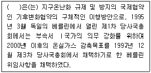
- 런던협약
- 몬트리올의정서
- 바젤협약
- 교토의정서
(정답률: 72%)
30. 천이가 점차 진행되어 가면서 일반적으로 나타나는 생지화학적 순환의 변화에 관한 설명으로 거리가 먼 것은?
- 물질순환으로 개방적으로 되어간다.
- 필수원소의 대사 회전 시간과 저장력은 증가한다.
- 내부순환은 증가한다.
- 영양물질의 보존력은 증가한다.
(정답률: 79%)
31. 생태계에서의 영양소의 순환에 관한 설명으로 가장 거리가 먼 것은?
- 질소순환에서 Nitrobacter는 아질산염을 질산염(NO3-)으로 전환한다.
- 질소순환에서 암모니아는 물에 쉽게 이온화되고 암모니아 이온(NH4+)을 형성한다.
- 인은 지용성 인산염 이온(HPO42-)으로 식물의 뿌리를 통해 흡수되며, 인의 순환은 비교적 복잡하다.
- 칼슘은 뼈와 패각에 흔히 결합해 있으므로 매우 느리게 순환한다.
(정답률: 77%)
32. 개체군의 생장곡선이 J자와 같은 모양이 아니라 S자와 같은 모양을 나타내는 요인과 거리가 먼 것은?
- 먹이부족
- 공간부족
- 노폐물의 증가
- 천적 및 질병의 감소
(정답률: 92%)
33. 다음 중 비점오염원에 해당하는 것은?
- 농경지
- 세차장
- 축산단지
- 비료공장
(정답률: 76%)
34. 생태적 천이가 외부의 힘이 아닌 군집이나 군집을 구성하는 생물에 의한 자체적인 요인으로 일어난 경우를 무엇이라 하는가?
- fundamental succesion
- allogenic succesion
- realized succesion
- autogenic succesion
(정답률: 74%)
35. 해수의 밀도와 해양생물에 관한 설명으로 가장 거리가 먼 것은?
- 해수의 밀도는 염분과 수온, 압력에 따라 다른 값을 가지나 염분에 가장 민감하여, 염분이 증가함에 따라 일정비율로 커진다.
- 해양생물의 체액은 해수와 유사한 삼투압을 가진다.
- 갈조류에 속하는 몇몇 해조류는 일산화탄소로 채워진 가스방을 엽상체에 가지고 물 속에서 똑바로 위로 설 수 있다.
- 해양생물 중 부유생물은 대부분이 해수보다 비중이 적어 유영기관을 이용해 부유능력을 증가시킬 수 있다.
(정답률: 53%)
36. 다음 중 대류권에서는 온실가스로, 성층권에서는 오존층 파괴물질로 존재하며, 질소가스와 오존의 반응으로 형성되거나 미생물의 활동에 의해 발생되는 것은?
- NO
- NO2
- N2O
- HNO3
(정답률: 35%)
37. 다음 설명하는 오염물질로 가장 적합한 것은?
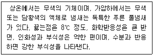
- 포스겐
- 폼알데하이드
- 이산화질소
- 이황화탄소
(정답률: 75%)
38. 내분비계 장애물질(환경호르몬)에 관한 설명으로 가장 거리가 먼 것은?
- 내분비 기능에 변화를 일으켜 생체 또는 그자손의 건강에 위해를 나타내는 외인성물질을 말한다.
- 산업화학물질에 의해서만 유발되며, 생물체의 근육조직에 주로 농축된다.
- 주로 다음 세대에 그 영향이 크고, 뇌의 성적행동을 관장하는 부분에 영향을 주어 생식행동에 이상을 일으킨다.
- 체내에 들어가 세포나 기관에 작용하여 대부분 여성호르몬과 같은 작용을 나타내는 것이 있으나, 다이옥신 등과 같이 여성호르몬 작용을 하지 않는 것도 있다.
(정답률: 79%)
39. 다음 생태계 중 1차순생산성(gm-2 yr-1)이 가장 높은 것은?
- 산호초
- 사막
- 원양
- 툰드라
(정답률: 77%)
40. 다음 중 식수오염(수인성 전염병)과 가장 밀접한 지표는?
- 대장균군
- EC
- COD
- BOD
(정답률: 77%)
3과목: 형태학
41. 기본조직(ground tissue) 중 두텁고, 종종 목질화된 2차 세포벽을 가진 세포들로 구성되며, 세포 내에 살아있는 원형질 부분이 없어지거나 지극히 좁게 남아서 때로는 동그라미 형태를 취하는 것은?
- 후벽조직(sclerenchyma)
- 후각조직(collenchyma)
- 유조직(parenchyma)
- 체관부(phloem)
(정답률: 55%)
42. 난자가 수정을 거치지 않고 발생하는 무성색식으로 개미, 벌, 말벌 등에서 흔히 나타나는데, 이 생식방법은?
- 분열
- 출아
- 단위생식
- 영양생식
(정답률: 92%)
43. 다음 중 전뇌(forebrain)에 해당하지 않는 것은?
- 시상(thalamus)
- 망상체(reticular system)
- 대뇌변연계(limbic system)
- 연수(medulla oblonagata)
(정답률: 80%)
44. 다음 설명으로 가장 적합한 동물은?
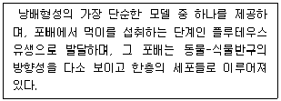
- 개구리
- 조류
- 성게
- 포유류
(정답률: 68%)
45. 다음은 신경계에 관한 설명이다. ( )안에 가장 알맞은 것은?
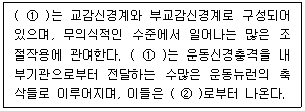
- ① 중추신경계, ② 소뇌
- ① 중추신경계, ② 척수
- ① 자율신경계, ② 소뇌
- ① 자율신경계, ② 척수
(정답률: 79%)
46. 각각의 배엽들은 몸의 부위형성에 특수한 비율로 관여하는데, 신경계는 다음 중 어디에서 기원하는가?
- 외배엽
- 중배엽
- 내배엽
- 통배엽
(정답률: 62%)
47. 다음 ( )안에 알맞은 용어는?
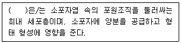
- 융단조직
- 포조직
- 카스파리띠
- 칼로스
(정답률: 35%)
48. 다음 중 다소 동질적인 조직으로 많은 분량을 차지하며, 주로 수와 피층 또는 섬유세포의 다발 등으로 발달하는 조직은?
- protoderm
- procambium
- ground meristem
- promeristem
(정답률: 60%)
49. 곤충의 형태적 특징에 관한 설명으로 옳지 않은 것은?
- 곤충의 몸은 두부(머리), 흉부(가슴), 복부(배)의 3부분으로 되어 있다.
- 흉부(가슴)는 3체절로 구성되어 있으며, 보통 3쌍의 다리와 2쌍의 날개(유시류)를 가지고 있다.
- 외피는 표피층, 진피층, 기저막 등 3층으로 이루어져 있다.
- 곤충의 다리는 거미류와 같이 7부분(맏)으로 구성되어 있다.
(정답률: 90%)
50. 줄기에 관한 설명으로 옳지 않은 것은?
- 외사관상 중심주는 종자식물군에서만 나타난다.
- 진화계통상 원생중심주가 관상중심주보다 원시적이다.
- 포위유관속은 나자식물과 피자식물에서 가장 보편적으로 나타나는 유관속이다.
- 복병립유관속은 물관부나 체관부의 어느 한 쪽이 다른 한 쪽의 내측이나 외측에 분화한 유관속이다.
(정답률: 37%)
51. 난과식물을 잘 기르려고 물을 자주 주었더니 얼마되지 않아 뿌리가 썩으면서 죽었다. 그 이유는 난과식물의 뿌리에는 물을 저장할 수 있는 여러 층의 세포들이 있는 것을 모르고 물을 너무 자주 주었기 때문이었는데, 이러한 여러 층의 세포들을 무엇이라고 하는가?
- 통기조직(aerenchyma)
- 내피(endodermis)
- 피층(cortex)
- 근피(velamen)
(정답률: 41%)
52. 조류의 호흡계에 관한 설명으로 옳지 않은 것은?
- 공기가 허파 내에서 한 방향으로만 흐른다.
- 폐를 중심으로 2쌍의 전기낭과 3쌍의 후기낭이 있다.
- 조류의 폐는 호흡과정 동안 부피가 별로 변하지 않는다.
- 기낭들은 실제적인 가스교환과는 거의 무관하고, 공기저장소로서의 역할과 공기를 폐로 출입시키는 작용을 주로 한다.
(정답률: 58%)
53. 다음 중 골격근의 특징이 아닌 것은?
- 불수의근이다.
- 줄무늬를 가진다.
- 근소포체를 가진다.
- 뼈에 부착되어 있다.
(정답률: 85%)
54. 다음 중 극피동물의 수관계(water vascular system)의 구성과 거리가 먼 것은?
- 폴리안포(polian vesicle)
- 차극(pedicellaria)
- 티제만스체(Tiedemann's body)
- 병낭(ampulla)
(정답률: 55%)
55. 꽃은 일반적으로 4부분으로 구성되어 있으며 윤생의 구조를 보이는데, 다음 중 꽃을 구성하는 4부분의 윤생체와 거리가 먼 것은?
- 화관
- 화탁
- 수술
- 심피
(정답률: 57%)
56. 포유류 포배 단계에서 배반포(blastocyst)의 한 부분으로서 강의 한쪽으로 돌출되어 있으며, 발생하는 배의 세포를 이루는 것은?
- 영양아층(trophblast)
- 대할구(macromere)
- 내세포집단(inner cell mass)
- 원장(archenteron)
(정답률: 55%)
57. 다음 중 복병립유관속을 갖는 식물은?
- 호박
- 알로에
- 대황
- 베고니아
(정답률: 66%)
58. 초본성 식물의 잎에서 일액현상(guttation)이 일어나는 조직은 무엇인가?
- 선모(glandular trichome)
- 염류분비선(salt gland)
- 수송세포(transfer cell)
- 배수조직(hydathode)
(정답률: 79%)
59. 다음 중 모두 횡문군인 것은?
- 내장근, 심장근
- 평활근, 내장근
- 골격근, 평활근
- 심장근, 골격근
(정답률: 48%)
60. 다음 절지동물의 여러 분류군과 호흡기관에 대한 일반적인 연결로 옳은 것은?
- 갑각류 – 서폐
- 거미류 – 기관
- 배각류 – 말피기관
- 곤충류 – 아가미
(정답률: 85%)
4과목: 보존 및 자원생물학
61. 보전 생물학의 원리는 상식과 새로운 보호지구 설계에서 겪은 경험을 함께 고려해야 한다. 새로운 공원의 조성 시 보편적으로 고려해야 할 조건으로 가장 거리가 먼 것은?
- 가능한 충분한 넓이를 가져야 한다.
- 가급적 가장자리를 많이 만든다.
- 길이나 장애물, 다른 인간 활동에 의해서 단편화 되지 않아야 한다.
- 많은 절멸 위험종의 존속을 위해 교란이 적어야 한다.
(정답률: 85%)
62. 최소 생존 개체군(MVP)을 유지시키기 위해 필요한 서식지의 크기(면적)를 무엇이라 하는가?
- 최소요효면적(Minimum Effect Area)
- 최소역동면적(Minimum Dynamic Area)
- 최소보호면적(Minimum Preservation Area)
- 최소생존면적(Minimum Survival Area)
(정답률: 75%)
63. 다음은 종 다양성 비교를 위한 다양성지수에 관한 설명이다. ( )안에 가장 적합한 것은?
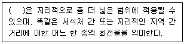
- 알파다양성
- 베타다양성
- 감마다양성
- 델타다양성
(정답률: 71%)
64. 지구온난화가 산림의 생물다양성에 미치는 영향에 관한 설명으로 가장 거리가 먼 것은?
- 북방침엽수림과 툰드라는 온대지역이 되고, 현재의 온대지역은 덥고 건조해질 것이다.
- 온난화에 의해서 군집의 분포가 표고별로 변동이 없을 것이다.
- 지형에 따라 연속된 군집의 분포가 단편화될 수 있다.
- 새로운 타입의 군집이 침입할 수 있다.
(정답률: 84%)
65. 식물 종의 개체군 사이에 유전적인 분화는 유전적으로 독특한 개체군을 형성할 수 있는데, 그 원인과 가장 거리가 먼 것은?
- 지리학적인 분화
- 수익성 식물의 육종
- 서식지 분화
- 화분의 전이
(정답률: 79%)
66. 다음 중 보전생물학의 중추를 이루는 학문분야와 가장 가까운 것은?
- taxonomy
- ecomomic geography
- meteorology
- climatology
(정답률: 64%)
67. 맥아더와 윌슨의 도서 생물 지리모형에 관한 설명으로 가장 거리가 먼 것은?
- 면적이 넓은 도서는 면적이 좁은 도서에 비해 일반적으로 종의 수가 많다.
- 도서의 면적이 넓을수록 지역적인 환경과 군집형이 더욱 다양해진다.
- 도서의 면적이 넓을수록 한 종 내에서 개체군의 수가 많아지게 되어 종의 분화가능성이 낮아지게 된다.
- 도서의 면적이 넓을수록 최근에 진화되었거나 도래한 종들의 멸종 확률이 낮아지게 된다.
(정답률: 74%)
68. 보전생물학 이해를 위한 일반적인 가정으로 가장 거리가 먼 것은?
- 생태적으로 복잡한 것이 좋다.
- 진화는 이로운 현상이다.
- 생물다양성은 본질적인 가치를 가지고 있다.
- 개체군과 생물종의 때아닌 절멸은 지극히 이로운 것이다.
(정답률: 87%)
69. 다음은 생태계 복원방법 중 어디에 해당하는가?
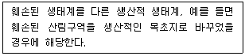
- 방치
- 복원
- 회복
- 대체
(정답률: 86%)
70. 대규모 서식지가 도로, 도시 또는 다른 인위적 활동장소 개발에 의해 분할되는 “서식지 단편화”로 인하여 나타나는 현상과 거리가 먼 것은?
- 서식지 단편화는 종이 확산되고 정착하는 능력을 제한한다.
- 서식지 단편화는 그 지역 토착동물이 먹이를 얻는 능력을 약화시킬 수 있다.
- 서식지가 단편화되면 넓은 지역에 분포하는 개체군이 제한된 지역에 2개 이상의 “아 개체군”으로 분할되어 개체군 쇠퇴나 절멸이 촉진된다.
- 서식지가 단편화되면 분할된 지역에 외래종이나 토착병원균 종류들이 침입할 가능성은 낮아진다.
(정답률: 88%)
71. 종이 생존하는데 필요한 최소의 크기의 개체군에 관한 설명으로 옳지 않은 것은?
- 최소 존속개체군이라 한다.
- 종을 보전하기 위해서는 개체군을 최소로 유지한다.
- 서식지 크기와 밀접한 관계가 있다.
- 보전생물학적인 관점에서 중요한 개념이다.
(정답률: 79%)
72. 생물종의 현지 외 보전전략에 관한 설명으로 가장 거리가 먼 것은?
- 식물원은 탐사대 파견으로 새로운 종을 발견하고 기초적인 연구도 수행토록 한다.
- 식물원은 희귀종과 위험종의 재배에 많은 비중을 둔다.
- 코코아, 고무나무 등은 종자저장이 불가능한 현실이다.
- 종자은행은 저온상태에서 종자 안의 저장된 에너지 소모없이 발아력 증대 및 유해한 돌연변이 생성방지를 위한 효율적인 식물보전 전략이다.
(정답률: 57%)
73. 지구상에서 발생한 대절멸(mass extinction) 사건 중 가장 거대한 절멸 사건으로 77~96% 정도로 추산되는 해양 동물종이 사라진 시기로 옳은 것은?
- 5억년전 Ordovician기
- 3억4천5백만년전 Devonian기
- 2억5천만년전 Permian기
- 1억8천만년전 Triassic기
(정답률: 76%)
74. 도서 생물 지리설에 근거한 보호지구 설계원리에 관한 설명으로 옳지 않은 것은?
- 좁은 보호 지구보다는 넓은 보호 지구가 좋다.
- 하나의 큰 면적보다는 여러 개의 작은 면적이 좋다.
- 선형의 서식지에서 공유가 적은 경우보다는 서식지를 서로 공유하는 경우가 좋다.
- 원형의 형태가 좋다.
(정답률: 78%)
75. 다음 중 생물다양성에 부여되는 직접경제가치(direct economic values)에 해당하는 것은?
- 소비적 사용가치
- 미물적 사용가치
- 선택가치
- 존재가치
(정답률: 75%)
76. 외래종의 도입으로 인하여 나타나는 현상과 가장 거리가 먼 것은?
- 도입종의 거의 대부분은 새로운 환경에 적응하기 어려워 정착하지 못한다.
- 양식이나 낚시 등을 목적으로 도입된 외래어종은 도입종이 토착종보다 크고 공격적이어서 경쟁과 포식을 통해 원래의 어류를 멸종시키기도 한다.
- 몇 종의 포식자와 함께 군락에 적응해 온 도서의 동물종은 도입된 포식자에 대한 방어능력이 절대적으로 크고, 또한 도서에서 서식하는 종은 대륙의 질병에 대한 자연적인 면역체계를 갖는다.
- 일부 도입종이 새로운 서식지를 우점할 수 있는 이유 중 하나는 새로운 서식지에는 자연적인 포식자, 질병, 기생충이 없기 때문이다.
(정답률: 70%)
77. 생물다양성의 구성요소에 관한 설명으로 가장 거리가 먼 것은?
- 생물다양성의 구성요소에는 직접적인 경제가치는 물론 간접적인 경제가치도 부여될 수 있다.
- 직접적인 경제가치를 소비성 가치와 생산성 가치로 나눌 때 땔나무, 약품, 건축 자재 등은 소비성 가치를 지닌다.
- 자연계에 존재하는 많은 종들은 가축이나 유전적으로 우수한 새로운 농산물로 쓰일 수 있다는 점에서 비소비적 가치를 지닌다.
- 간접적 가치는 수확하거나 손상하지 않고도 우리에게 경제적 이득을 제공하는 생물다양성에 부여된다.
(정답률: 74%)
78. 다음은 국제자연보전연맹-세계보전연맹(IUCN)이 분류한 보호지구 중 하나에 대한 설명이다. ( )안에 가장 적합한 것은?
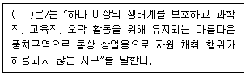
- 자원 보호지구(resources preserve area)
- 국립생물관리 보전구역(natural bitic preserve area)
- 국립공원(national parks)
- 제한 관리 특구(restrict managed sanctuaries)
(정답률: 83%)
79. 야생식물의 종자를 채집하여 종자은행에 저장하고자 할 때 야생종의 표본 추출전략에 관한 설명으로 가장 거리가 먼 것은?
- 종의 지리적, 환경적 범위 대부분을 포함할 수 있도록 종자의 수집은 한 종당 2개 이상의 개체군으로부터 이루어져야 한다.
- 개체당 종자수는 종자의 활력에 따라 정해야하며, 종자의 활력이 높으면 한 개체당 소량의 종자가 채집될 것이다.
- 개체들의 자식생산 능력이 낮은 경우에는 수 년에 걸쳐 고루 종자를 수집한다.
- 절멸의 위험이 있는 종은 수집의 우선순위에 해당한다.
(정답률: 68%)
80. 보전 우선순위를 설정하는 접근방법 중 생태계 수준의 접근은 비단 종을 보호하는 것 뿐 아니라 생태계의 기능을 보호하는 것을 포함한다. 다음 중 특징적인 생물군집을 구성하고 있는 종과 환경 모두를 포함하는 지역을 나타내는 용어로 가장 적합한 것은?
- 생물다양성 중점지역(hot spot)
- 대표지점(representative site)
- 보충지점(complementary site)
- 야생지역(wilderness area)
(정답률: 58%)
5과목: 자연환경관계법규
81. 국토의 계획 및 이용에 관한 법률에 의해 개발행위허가를 신청할 때 첨부하여야 할 계획서의 내용에 해당하지 않는 것은?
- 기반시설의 설치 또는 그에 필요한 용지의 확보 계획
- 경관 및 조경에 관한 계획
- 개발 이익 환원에 관한 계획
- 위해방지 및 환경오염방지 계획
(정답률: 80%)
82. 야생생물 보호 및 관리에 관한 법률 시행규칙상 멸종위기 야생생물 Ⅰ급(조류)에 해당하는 것은?
- 고니 Cygnus columbianus
- 흑고니 Cygnus olor
- 검은머리갈매기 Larus saundersi
- 독수리 Aegypius monachus
(정답률: 60%)
83. 산지관리법상 산림청장등은 산지전용허가·산지일시 사용허가 등을 받은 자에게 업무에 관한 사항을 보고하게 하거나 관련 자료의 제출 및 현지조사를 요구할 수 있는데, 이를 위반하여 업무보고 및 자료제출이나 현자조사를 거부·방해 또는 기피한 자에 대한 과태료 부과기준으로 옳은 것은?
- 2천만원 이하의 과태료를 부과한다.
- 1천만원 이하의 과태료를 부과한다.
- 5백만원 이하의 과태료를 부과한다.
- 2백만원 이하의 과태료를 부과한다.
(정답률: 66%)
84. 백두대간 보호에 관한 법률상 백두대간 보호지역을 지정·고시하는 행정기관장은?
- 국토교통부장관
- 환경부장관
- 산림청장
- 국립공원관리공단 이사장
(정답률: 67%)
85. 독도 등 도서지역의 생태계 보전에 관한 특별법상 용어의 정의이다. ( )안에 알맞은 것은?
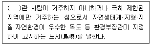
- 특별보호도서
- 특정도서
- 생태보호도서
- 생태경관보호도서
(정답률: 71%)
86. 독도 등 도서지역의 생태계 보전에 관한 특별법상 환경부장관이 특정도서의 자연생태계 보전을 위하여 토지 등을 매수하는 경우 토지매수가격은 어느 법에 의해 산정하는가?
- 공유토지 분할에 관한 특례법
- 공익사업을 위한 토지 등의 취득 및 보상에 관한 법률
- 국토의 계획 및 이용에 관한 법률
- 지가공시 및 토지 등의 평가에 관한 법률
(정답률: 69%)
87. 국토의 계획 및 이용에 관한 법률 시행령상 기반시설 중 광장 구분기준에 해당하지 않는 것은?
- 교통광장
- 일반광장
- 특수광장
- 건축물부설광장
(정답률: 61%)
88. 습지보전법상 습지보전기본계획에 포함되어야 할 사항이 아닌 것은? (단, 기타사항 등은 제외)
- 습지보호지역 지정에 관한 계획
- 습지조사에 관한 사항
- 습지보전을 위한 국제협력에 관한 사항
- 습지의 분포 및 면적과 생물다양성의 현황에 관한 사항
(정답률: 48%)
89. 국토기본법상 국토계획의 정의 및 구분기준에서 “국토전역을 대상으로 하여 특정부분에 대한 장기적인 발전방향을 제시하는 계획”을 의미하는 것은?
- 국토종합계획
- 부문별계획
- 도종합계획
- 지역계획
(정답률: 64%)
90. 다음은 자연공원법상 용어의 뜻이다. ( )안에 적합한 것은?
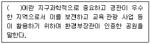
- 지질공원
- 역사공원
- 자연휴양림공원
- 테마공원
(정답률: 67%)
91. 자연환경보전법상 전이구역안에서 토지의 형질변경을 행하여 자연생태·자연경관을 훼손시킨 자에 대한 벌칙기준으로 옳은 것은?
- 5년 이하의 징역 또는 3천만원 이하의 벌금에 처한다.
- 3년 이하의 징역 또는 2천만원 이하의 벌금에 처한다.
- 2년 이하의 징역 또는 1천만원 이하의 벌금에 처한다.
- 1년 이하의 징역 또는 5백만원 이하의 벌금에 처한다.
(정답률: 34%)
92. 환경정책기본법령상 하천의 수질 및 수생태계 환경기준 중 6가 크롬(Cr6+)의 기준값(mg/L)으로 옳은 것은? (단, 사람의 건강보호 기준)
- 검출되어서는 안 됨(검출한계 0.001)
- 검출되어서는 안 됨(검출한계 0.01)
- 0.02 이하
- 0.⑤ 이하
(정답률: 84%)
93. 환경정책기본법령상 NO2의 대기환경기준치( ① ) 및 측정방법( ② )으로 옳은 것은? (단, 기준치는 1시간 평균치 기준)
- ① 0.03 ppm 이하
② 자외선형광법(Pulse U.V. Fluorescence Method) - ① 0.10 ppm 이하
② 화학발광법(Chemiluminescent Method) - ① 0.03 ppm 이하
② 화학발광법(Chemiluminescent Method) - ① 0.10 ppm 이하
② 자외선형광법(Pulse U.V. Fluorescence Method)
(정답률: 62%)
94. 환경정책기본법령상 중앙정책위원회의 원활한 운영을 위하여 환경정책·자연환경·기후대기·물·상하수도·자원순환 등 환경관리 부분별로 분과위원회를 둘 수 있는데, 그 분과 위원회의 구성으로 옳은 것은?
- 분과위원장을 1명을 포함한 10명 이내의 위원으로 구성한다.
- 분과위원장을 1명을 포함한 15명 이내의 위원으로 구성한다.
- 분과위원장을 1명을 포함한 20명 이내의 위원으로 구성한다.
- 분과위원장을 1명을 포함한 25명 이내의 위원으로 구성한다.
(정답률: 60%)
95. 자연공원법령상 자연공원의 자연자원조사는 특별한 경우를 제외하고 얼마마다 실시하여야 하는가?
- 3년
- 5년
- 10년
- 15년
(정답률: 29%)
96. 자연공원법상 자연공원의 정의에 포함되지 않는 것은?
- 국립공원
- 도립공원
- 사설공원
- 군립공원
(정답률: 79%)
97. 농지법상 농지에 해당하는 것은?
- 초지법에 의하여 조성된 토지
- 실제 토지현상이 일년성 식물재배지
- 배수장 수로 등 농지 개량시설 부지
- 농산물유통에 직접 사용되는 부지
(정답률: 71%)
98. 국토의 계획 및 이용에 관한 법률상 토지의 이용실태 및 특성, 장래의 토지이용 방향 등을 고려하여 구분한 용도지역으로 옳지 않은 것은?
- 도시지역
- 생산지역
- 관리지역
- 자연환경보전지역
(정답률: 67%)
99. 야생생물 보호 및 관리에 관한 법률 시행규칙상 멸종위기 야생생물 Ⅱ급(해조류)에 해당하는 것은?
- 만년콩 Enchresta japonica
- 삼나무말 Coccophora langsdorfii
- 한란 Cymbidium kanran
- 암매 Diapensia lapponica var. obovata
(정답률: 57%)
100. 자연환경보전법규상 위임업무 보고사항 중 “생태마을의 지정 및 해제 실적” 보고회수의 기준으로 각각 옳은 것은?
- 지정 : 연4회, 해제 : 연2회
- 지정 : 연4회, 해제 : 수시
- 지정 : 연1회, 해제 : 연2회
- 지정 : 연1회, 해제 : 수시
(정답률: 87%)